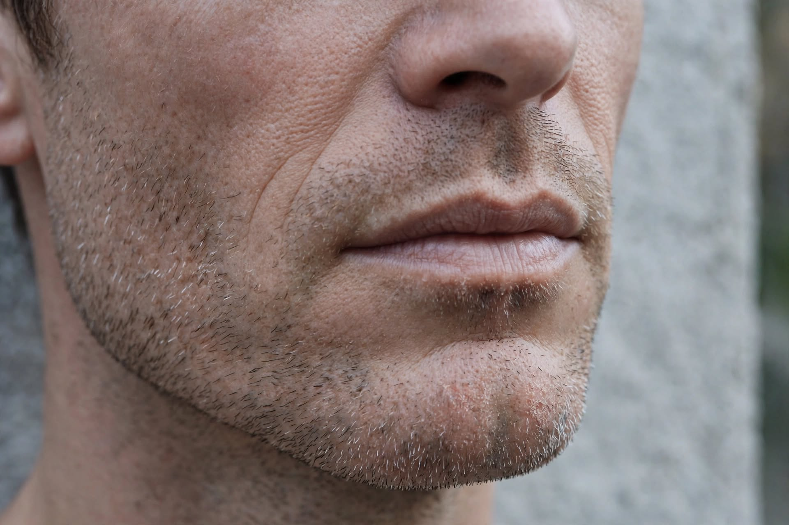
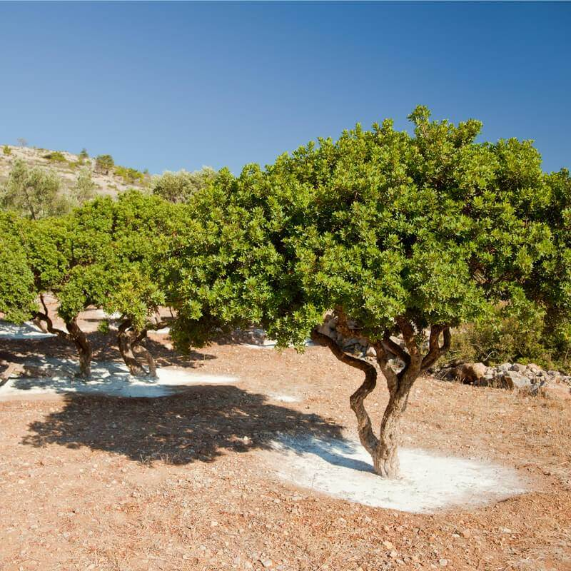
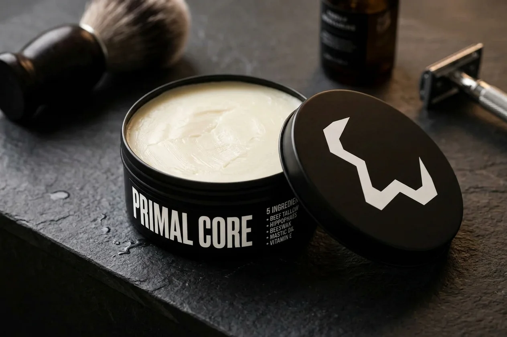
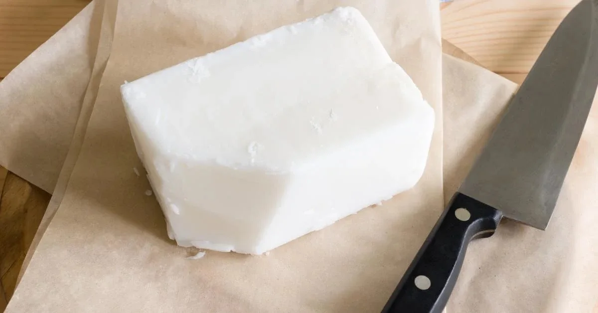

Dry skin in men during winter: a simple care guide
Why your face can feel drier in winter, how to choose a moisturizer, and where a tallow balm might fit in your routine.

Why your face can feel drier in winter, how to choose a moisturizer, and where a tallow balm might fit in your routine.

Everyday care for dry hands and rough elbows, choosing a moisturizer, and when cracks or irritation need professional advice.

A transparent view of the PRIMAL CORE formula under development, ingredient roles, and what the final INCI list will confirm.

What rendered tallow is, how it is used in cosmetics, and the limits of current evidence for facial skincare.

A practical guide to care after shaving, the difference between balm and lotion, and choosing a product your skin tolerates.

How mastic resin, mastic essential oil and other Pistacia lentiscus oils differ, the aromatic role in skincare, and what to consider.

The origins, history and research interest surrounding Chios mastic in facial skincare.
The historical inspiration behind PRIMAL CORE, and the distinction between tradition, ingredient research and assessment of a modern cosmetic.

A traditional raw material in modern skincare.

What does beef tallow actually contain, how do its constituents work, and why is it returning to modern facial skincare?

A return to simpler formulas, the desire for fewer products and the search for meaningful hydration bring a traditional ingredient back into focus.

Why an ingredient used for centuries is returning to modern men's facial care.

Can you use beef tallow on your face every day? What does it offer your skin, and what should you know before trying it?

Can a simple face balm make a difference to daily skincare? What can you expect from the first application to the end of a month?